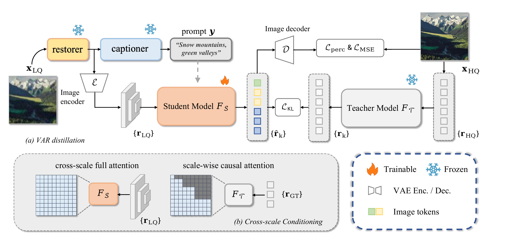
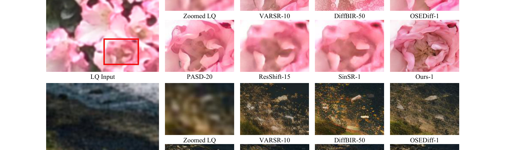
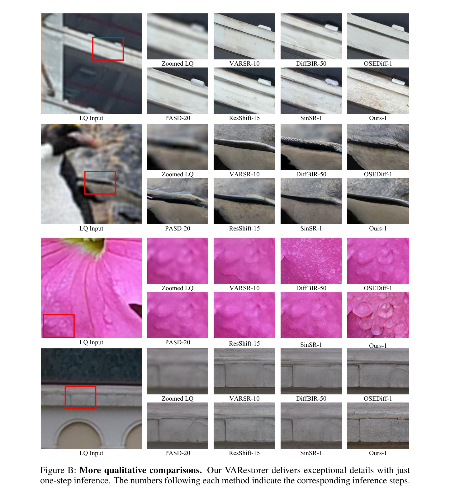
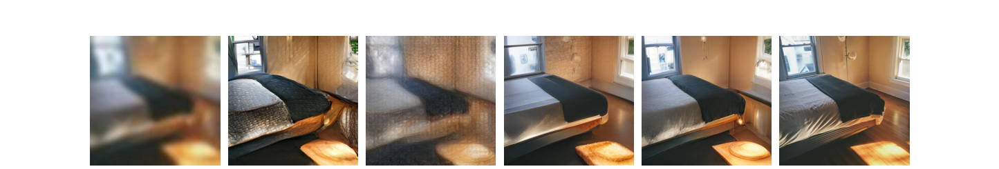
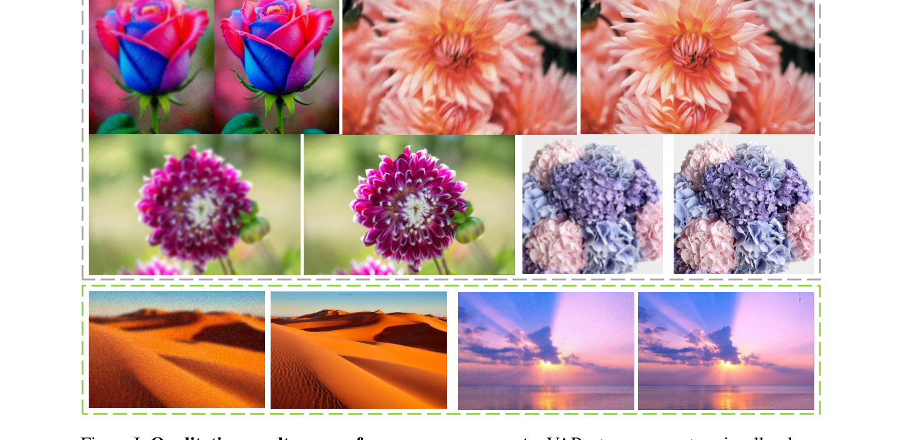
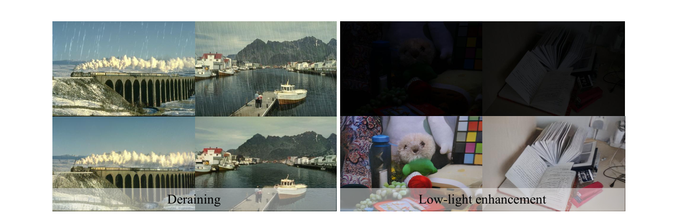
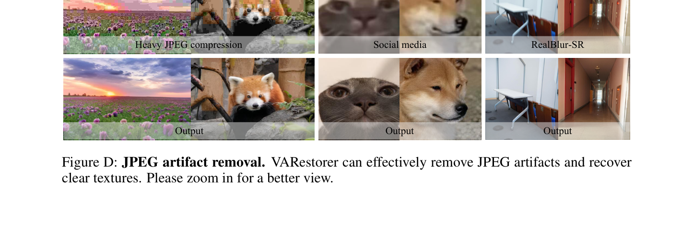
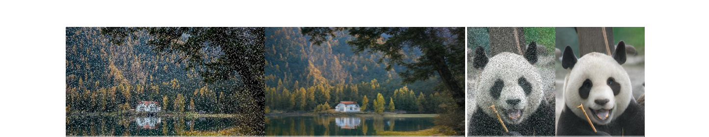
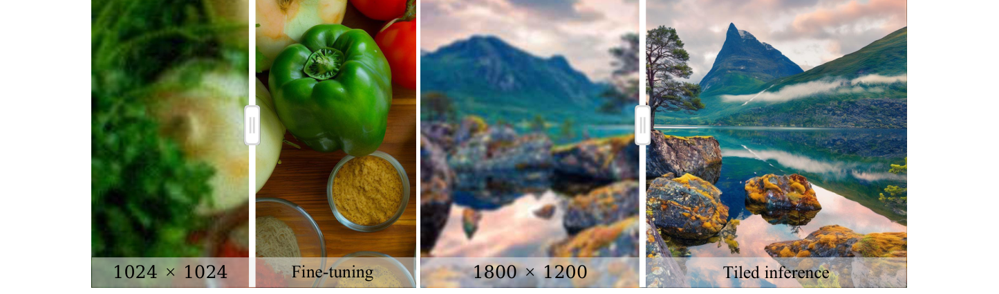
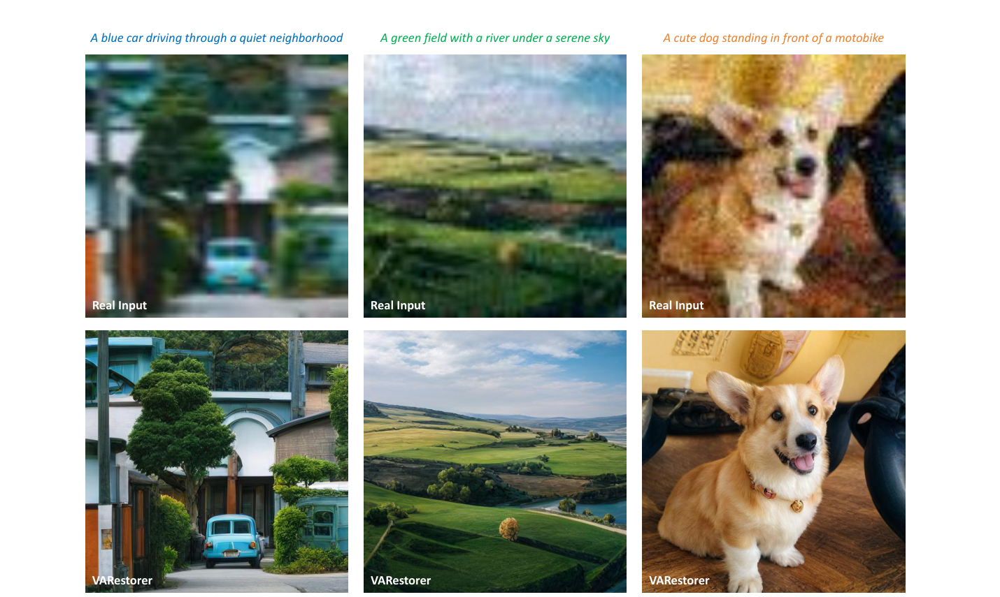

Recent advancements in visual autoregressive models (VAR) have demonstrated their effectiveness in image generation, highlighting their potential for real-world image super-resolution (Real-ISR). However, adapting VAR for ISR presents critical challenges. The next-scale prediction mechanism, constrained by causal attention, fails to fully exploit global low-quality (LQ) context, resulting in blurry and inconsistent high-quality (HQ) outputs. Additionally, error accumulation in the iterative prediction severely degrades coherence in the ISR task. To address these issues, we propose VARestorer, a simple yet effective distillation framework that transforms a pre-trained text-to-image VAR model into a one-step ISR model.
By leveraging distribution matching, our method eliminates the need for iterative refinement, significantly reducing error propagation and inference time. Furthermore, we introduce pyramid image conditioning with cross-scale attention, which enables bidirectional scale-wise interactions and fully utilizes the input image information while adapting to the autoregressive mechanism. This prevents later LQ tokens from being overlooked in the transformer. By fine-tuning only 1.2% of the model parameters through parameter-efficient adapters, our method maintains the expressive power of the original VAR model while significantly enhancing efficiency. Extensive experiments show that VARestorer achieves state-of-the-art performance with 72.32 MUSIQ and 0.7669 CLIPIQA on DIV2K, while accelerating inference by 10× compared to conventional VAR inference.

Multi-step VAR inference suffers from severe error accumulation on ISR, where the output must precisely align with the input content. We distill the autoregressive teacher \(F_{\mathcal{T}}\) into a one-step student \(F_{\mathcal{S}}\) by aligning their token-level distributions across all scales with a KL objective \(\mathcal{L}_{\text{KL}}=\sum_k \mathrm{KL}\bigl(p_{\mathcal{T}}(r_k\mid r_{\mathrm{HQ},<k})\,\|\,p_{\mathcal{S}}(\hat r_k\mid r_{\mathrm{LQ}})\bigr)\), combined with perceptual and MSE losses. The student learns a direct one-pass mapping from LQ input to all HQ tokens, eliminating iterative error propagation.
A fine-tuned VAE encoder produces a multi-scale token pyramid of the LQ image. We replace VAR's block-wise causal attention with full cross-scale attention, letting coarse structures and fine textures reinforce each other bidirectionally. This preserves the pre-trained VAR's architecture while fully exploiting LQ conditioning signals at every scale.
We inject LoRA adapters (rank 32) into the cross-/self-attention modules and freeze the rest of the VAR backbone. Only 27.3M parameters (1.2% of the Infinity-2B transformer) are trainable, retaining the generative prior while enabling fast adaptation to the ISR task.
Comparison on synthetic DIV2K-Val and real-world DrealSR / RealSR benchmarks. Best and second-best values are highlighted. The number after each method denotes its inference steps.
| Dataset | Method | PSNR↑ | SSIM↑ | LPIPS↓ | MANIQA↑ | MUSIQ↑ | NIQE↓ | CLIPIQA↑ | LIQE↑ | QALIGN↑ | FID↓ |
|---|---|---|---|---|---|---|---|---|---|---|---|
| DIV2K-Val | DiffBIR-50 | 21.48 | 0.5050 | 0.3670 | 0.5664 | 69.87 | 5.003 | 0.7303 | 4.346 | 4.070 | 32.75 |
| SeeSR-50 | 21.97 | 0.5673 | 0.3193 | 0.5036 | 68.67 | 4.808 | 0.6936 | 4.274 | 4.035 | 25.90 | |
| PASD-20 | 22.31 | 0.5675 | 0.3296 | 0.4371 | 67.78 | 4.581 | 0.6459 | 3.947 | 3.895 | 35.47 | |
| ResShift-15 | 22.66 | 0.5888 | 0.3077 | 0.3693 | 58.90 | 6.916 | 0.5715 | 3.082 | 3.309 | 30.81 | |
| OSEDiff-1 | 22.06 | 0.5735 | 0.2942 | 0.4410 | 67.96 | 4.711 | 0.6680 | 4.117 | 3.926 | 26.34 | |
| SinSR-1 | 22.52 | 0.5680 | 0.3240 | 0.4216 | 62.77 | 6.005 | 0.6483 | 3.493 | 3.553 | 35.45 | |
| VARSR-10 | 22.41 | 0.5724 | 0.3177 | 0.5173 | 71.48 | 5.977 | 0.7330 | 4.282 | 3.853 | 33.86 | |
| VARestorer-1 | 21.08 | 0.5355 | 0.3131 | 0.5590 | 72.32 | 4.410 | 0.7669 | 4.664 | 4.363 | 31.11 | |
| DrealSR | DiffBIR-50 | 24.05 | 0.5831 | 0.4669 | 0.5543 | 66.14 | 6.329 | 0.7072 | 4.101 | 3.734 | 180.4 |
| SeeSR-50 | 25.82 | 0.7405 | 0.3174 | 0.5128 | 65.09 | 6.407 | 0.6905 | 4.126 | 3.754 | 147.3 | |
| PASD-20 | 26.14 | 0.7466 | 0.3081 | 0.4404 | 62.34 | 6.126 | 0.6293 | 3.603 | 3.572 | 164.1 | |
| ResShift-15 | 24.48 | 0.6803 | 0.4169 | 0.3232 | 50.77 | 8.941 | 0.5371 | 2.629 | 2.877 | 159.7 | |
| OSEDiff-1 | 25.85 | 0.7548 | 0.2966 | 0.4657 | 64.69 | 6.464 | 0.6962 | 3.939 | 3.746 | 135.4 | |
| SinSR-1 | 25.83 | 0.7157 | 0.3655 | 0.3901 | 55.64 | 6.953 | 0.6447 | 3.131 | 3.135 | 172.7 | |
| VARSR-10 | 26.05 | 0.7353 | 0.3536 | 0.5361 | 68.14 | 6.971 | 0.7215 | 4.137 | 3.480 | 156.5 | |
| VARestorer-1 | 24.31 | 0.6894 | 0.3584 | 0.5638 | 69.49 | 5.494 | 0.7810 | 4.582 | 4.188 | 149.7 | |
| RealSR | DiffBIR-50 | 23.33 | 0.6180 | 0.3650 | 0.5583 | 69.28 | 5.839 | 0.7054 | 4.101 | 3.760 | 130.8 |
| SeeSR-50 | 23.60 | 0.6947 | 0.3007 | 0.5437 | 69.82 | 5.396 | 0.6696 | 4.136 | 3.789 | 125.4 | |
| PASD-20 | 24.83 | 0.7247 | 0.2709 | 0.4423 | 66.93 | 5.349 | 0.5815 | 3.575 | 3.705 | 131.9 | |
| ResShift-15 | 23.67 | 0.6931 | 0.3451 | 0.3538 | 56.90 | 8.331 | 0.5350 | 2.891 | 3.111 | 129.5 | |
| OSEDiff-1 | 23.59 | 0.7074 | 0.2920 | 0.4716 | 69.08 | 5.652 | 0.6685 | 4.070 | 3.801 | 123.5 | |
| SinSR-1 | 24.50 | 0.7076 | 0.3219 | 0.4045 | 61.07 | 6.319 | 0.6178 | 3.200 | 3.299 | 140.8 | |
| VARSR-10 | 24.12 | 0.7001 | 0.3216 | 0.5465 | 71.16 | 6.063 | 0.7004 | 4.148 | 3.551 | 130.6 | |
| VARestorer-1 | 22.78 | 0.6453 | 0.3249 | 0.5655 | 71.37 | 4.763 | 0.7423 | 4.601 | 4.180 | 117.2 |
VARestorer delivers the strongest perceptual metrics (MANIQA / MUSIQ / NIQE / CLIPIQA / LIQE / QALIGN) across all three datasets while running at 1-step inference, achieving the best RealSR FID as well.
| Method | Trainable Params. | Inference Time (s) | GFLOPs | MANIQA↑ | MUSIQ↑ |
|---|---|---|---|---|---|
| DiffBIR | 380.0M | 10.27 | 12,117 | 0.5664 | 69.87 |
| SeeSR | 749.9M | 7.18 | 32,928 | 0.5036 | 68.67 |
| PASD | 625.0M | 4.58 | 14,562 | 0.4371 | 67.78 |
| ResShift | 118.6M | 1.13 | 2,745 | 0.3693 | 58.90 |
| OSEDiff | 8.5M | 0.18 | 1,133 | 0.4410 | 67.96 |
| VARSR | 1101.9M | 0.63 | — | 0.5173 | 71.48 |
| VARestorer | 27.3M | 0.23 | 1,536 | 0.5590 | 72.32 |
With only 27.3M trainable parameters and 0.23 s / image, VARestorer is ~10× faster than VARSR and orders-of-magnitude cheaper than diffusion baselines, while attaining the best perceptual quality.



| Method | LPIPS↓ | MUSIQ↑ | NIQE↓ | CLIPIQA↑ |
|---|---|---|---|---|
| w/o distill | 0.3723 | 62.22 | 6.283 | 0.4794 |
| w/o cross-scale | 0.4224 | 63.72 | 6.029 | 0.3910 |
| w/o ℒKL | 0.3214 | 69.73 | 4.372 | 0.6682 |
| VARestorer (full) | 0.3131 | 72.32 | 4.410 | 0.7669 |
Each of the three components—one-step distillation, cross-scale attention and KL distribution matching—contributes meaningfully to the final performance on DIV2K-Val.






@inproceedings{zhu2026varestorer,
title = {VARestorer: One-Step VAR Distillation for Real-World Image Super-Resolution},
author = {Zhu, Yixuan and Ma, Shilin and Wang, Haolin and Li, Ao and
Jing, Yanzhe and Tang, Yansong and Chen, Lei and Lu, Jiwen and Zhou, Jie},
booktitle = {International Conference on Learning Representations (ICLR)},
year = {2026},
url = {https://openreview.net/forum?id=T2Oihh7zN8}
}